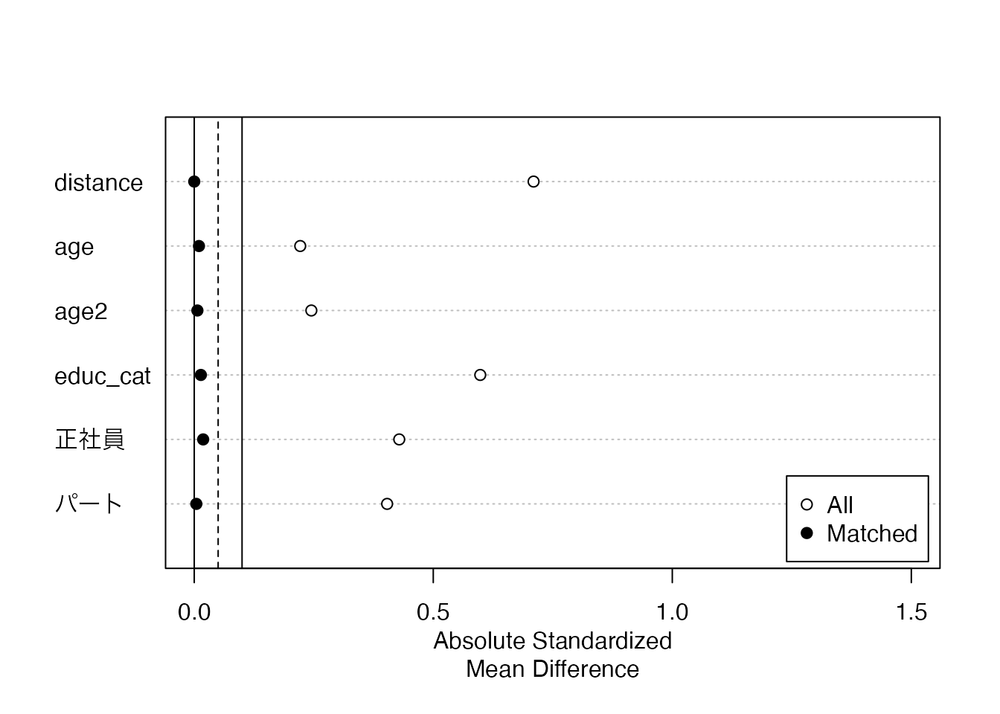

# パッケージの読み込み
pacman::p_load(tidyverse, tableone, MatchIt, gt, gtExtras, modelsummary)
# データの読み込み
df <- read_csv("data/training.csv")プレゼミ2024
第7章 練習問題
第7章 練習問題
トレーニング・プログラムの受講が賃金を上げるかどうか検証する。
準備
必要なパッケージとデータを読み込む。
tidyverseパッケージ : データマネジメントtableoneパッケージ：処置群と対照群の比較MatchItパッケージ:
教科書の変数名がいくつか間違っているので，正しい変数名を確認します。
df |> names() # 変数名を抽出[1] "training" "male" "educ_cat" "age" "couple"
[6] "child" "empstat_edt" "wage" 教科書にあるtrainigはtraining，empster_catはempstat_edtの間違いです。
読み込んだデータの概要を確認します。
glimpse(df)Rows: 2,362
Columns: 8
$ training <dbl> 1, 1, 1, 0, 0, 0, 0, 0, 1, 1, 1, 0, 1, 0, 1, 0, 1, 1, 1, 0…
$ male <dbl> 1, 1, 1, 1, 1, 0, 0, 1, 1, 0, 0, 1, 0, 0, 1, 0, 1, 1, 1, 1…
$ educ_cat <dbl> 16, 16, 16, 16, 11, 12, 11, 11, 16, 16, 15, 15, 12, 12, 11…
$ age <dbl> 48, 47, 58, 60, 56, 32, 64, 61, 46, 54, 63, 64, 54, 64, 46…
$ couple <dbl> 1, 1, 1, 1, 1, 0, 1, 1, 1, 1, 1, 1, 1, 1, 1, 0, 1, 1, 1, 1…
$ child <dbl> 1, 1, 2, 3, 2, 2, 1, 2, 2, 3, 2, 2, 2, 2, 2, 3, 2, 2, 2, 2…
$ empstat_edt <chr> "full", "full", "full", "full", "full", "part", "full", "f…
$ wage <dbl> 1762.8205, 2692.3077, 2312.1387, NA, 1923.0769, 900.0000, …就業状況を示す変数empstat_edtの値を確認します。
# カテゴリー変数の水準を確認
df$empstat_edt |> table()
full not employed part
1623 85 654 not employed: 無職part: パートfull: 正社員
の3つのカテゴリーがあります。 後の分析のために、empstat_edtが文字列になっているので、因子型に変換しつつ， empstat_edtのカテゴリーごとにダミー変数を作成します。
df <- df |> mutate( # データの変換
empstat_edt = as.factor(empstat_edt),
無職 = ifelse(empstat_edt == "not employed", 1, 0), # 無職
パート = ifelse(empstat_edt == "part", 1, 0), # パート
正社員 = ifelse(empstat_edt == "full", 1, 0) # 正社員
)問題 (1)
トレーニング・プログラムの効果をOLS推定することの問題点については各自で考えてください。
問題 (2)
トレーニング・プログラムへの参加不参加で，個人の属性に差があるかどうかをtableoneパッケージのCreateTableOne()関数を使って作表します。 CreateTableOne()関数の引数は以下の通りです。
vars: 出力する変数の指定strata: グループ化する変数の指定
ここでは，以下の変数を選択します。
trainingage: 年齢edu_cat: 教育年数empstat_edt: 雇用の状況couple: 既婚者ダミーchild: 子どもの有無ダミー
階層はtrainingで作表します。
df |> CreateTableOne( # 表を作成
vars = ( # 出力する変数の指定
c("age", "educ_cat", "無職", "パート", "正社員", "couple", "child")
),
strata = "training" # トレーニングの参加有無
) Stratified by training
0 1 p test
n 1201 1161
age (mean (SD)) 49.11 (10.39) 46.99 (9.59) <0.001
educ_cat (mean (SD)) 13.16 (1.87) 14.28 (1.86) <0.001
無職 (mean (SD)) 0.04 (0.21) 0.03 (0.16) 0.017
パート (mean (SD)) 0.36 (0.48) 0.20 (0.40) <0.001
正社員 (mean (SD)) 0.60 (0.49) 0.78 (0.42) <0.001
couple (mean (SD)) 0.90 (0.30) 0.91 (0.28) 0.154
child (mean (SD)) 2.12 (0.81) 2.02 (0.94) 0.011 ここから、訓練を受けたグループと受けていないグループの間で，
- 年齢
ageが低い方が， - 教育年数
educ_catが長い方が， - 正社員であるほうが，
- 子どもがいない方が，
トレーニングを受ける傾向があることがわかります。
トレーニングを受けたグループと受けていないグループの間で，これらの違いがあるため、 この2つのグループの所得を比較しても、トレーニングの効果を正確に評価することができません。
問題 (3) : 傾向スコアの作成
そこで、トレーニングを受けた人に似た人を探すために、トレーニングを受ける決定要因を分析するロジスティックス回帰分析を行います。 ここでは、
- 年齢
ageとその2乗age^2 - 教育
educ_cat - 就業状況
empstat_edt
の3つがトレーニングを受ける決定要因であると仮定します。
df <- df |> mutate( # データの変換
age2 = age^2, # 年齢の2乗
)
logit_model <- "training ~ age + age2 + educ_cat + 正社員 + パート"
logit <- glm( # 一般化線形モデル
logit_model, # 回帰モデル
data = df, # データ
family = binomial(link = "logit") # リンク関数
)
summary(logit)
Call:
glm(formula = logit_model, family = binomial(link = "logit"),
data = df)
Coefficients:
Estimate Std. Error z value Pr(>|z|)
(Intercept) -5.6666032 0.9724581 -5.827 5.64e-09 ***
age 0.0789741 0.0407688 1.937 0.05273 .
age2 -0.0009744 0.0004317 -2.257 0.02399 *
educ_cat 0.2705707 0.0230428 11.742 < 2e-16 ***
正社員 0.6847793 0.2410081 2.841 0.00449 **
パート -0.0129067 0.2502364 -0.052 0.95886
---
Signif. codes: 0 '***' 0.001 '**' 0.01 '*' 0.05 '.' 0.1 ' ' 1
(Dispersion parameter for binomial family taken to be 1)
Null deviance: 3273.7 on 2361 degrees of freedom
Residual deviance: 3005.7 on 2356 degrees of freedom
AIC: 3017.7
Number of Fisher Scoring iterations: 4ロジスティックス回帰の結果より，
ageとage2の回帰係数から，年齢が高いほどトレーニングを受ける確率が高くなるが、年齢が高くなるとその増加の幅は徐々に減少し、ある年齢を超えるとトレーニングを受ける確率が低くなる。educ_catの回帰係数から教育年数が長いほどトレーニングを受ける確率が高くなる。- 正社員ダミーの係数から正社員のほうがトレーニングを受ける確率が高い。
という結果が得られました。 このロジスティックス回帰の結果を用いて計算した従属変数の推定値を傾向スコアとして用います。
問題 (4) : 傾向スコアの確認
上で作成した傾向スコアを用いたマッチングが適切かどうかを確認するために、傾向スコアの分布を確認します。 MatchItパッケージのmatchit()関数を使って、傾向スコアを計算します。 matchit()関数の引数は以下の通りです。
formula: 回帰式data: データmethod: マッチング方法distance: マッチングの距離discard: マッチング後のデータの削除replace: 重複の許可
ここでは、最近傍法nearestを用いてマッチングを行います。 距離概念はロジスティックス回帰glmを用います。
m_result1 <- MatchIt::matchit(
training ~ age + age2 + educ_cat + 正社員 + パート,
data = df, # データ
method = "nearest", # 最近傍法
distance = "glm", # ロジスティックス回帰
discard = "both", # マッチング後のデータの削除
replace = TRUE # 重複の許可
)
summary(m_result1) # 出力
Call:
MatchIt::matchit(formula = training ~ age + age2 + educ_cat +
正社員 + パート, data = df, method = "nearest", distance = "glm",
discard = "both", replace = TRUE)
Summary of Balance for All Data:
Means Treated Means Control Std. Mean Diff. Var. Ratio eCDF Mean
distance 0.5474 0.4375 0.7098 0.9717 0.1983
age 46.9862 49.1132 -0.2217 0.8529 0.0474
age2 2299.6701 2519.9376 -0.2450 0.8181 0.0474
educ_cat 14.2782 13.1632 0.5983 0.9929 0.1455
正社員 0.7778 0.5995 0.4288 . 0.1783
パート 0.1955 0.3555 -0.4035 . 0.1600
eCDF Max
distance 0.2974
age 0.1215
age2 0.1215
educ_cat 0.2665
正社員 0.1783
パート 0.1600
Summary of Balance for Matched Data:
Means Treated Means Control Std. Mean Diff. Var. Ratio eCDF Mean
distance 0.5474 0.5474 0.0000 0.9983 0.0002
age 46.9862 47.0810 -0.0099 1.0317 0.0036
age2 2299.6701 2305.5960 -0.0066 1.0258 0.0036
educ_cat 14.2782 14.2524 0.0139 0.9978 0.0043
正社員 0.7778 0.7855 -0.0186 . 0.0078
パート 0.1955 0.1972 -0.0043 . 0.0017
eCDF Max Std. Pair Dist.
distance 0.0043 0.0002
age 0.0095 0.1052
age2 0.0095 0.0964
educ_cat 0.0112 0.0166
正社員 0.0078 0.0228
パート 0.0017 0.0434
Sample Sizes:
Control Treated
All 1201. 1161
Matched (ESS) 381.09 1161
Matched 623. 1161
Unmatched 575. 0
Discarded 3. 0マッチング結果の図
summary(m_result1) %>% plot(xlim=c(0,1.5))
傾向スコアによるマッチングにより，トレーニングを受けたグループと受けていないグループの間での属性の差(黒丸)が小さくなっていることがわかります。
問題 (5) 傾向スコア回帰
トレーニングへの参加の有無で賃金の差があるかどうか調べよ。 MatchItパッケージのmatch.data()関数を使って， 処置群と対照群だけのデータセットmatched_dataを作成します。
matched_data <- m_result1 %>% MatchIt::match.data()
head(matched_data)# A tibble: 6 × 14
training male educ_cat age couple child empstat_edt wage 無職 パート
<dbl> <dbl> <dbl> <dbl> <dbl> <dbl> <fct> <dbl> <dbl> <dbl>
1 1 1 16 48 1 1 full 1763. 0 0
2 1 1 16 47 1 1 full 2692. 0 0
3 1 1 16 58 1 2 full 2312. 0 0
4 0 1 16 60 1 3 full NA 0 0
5 0 1 11 61 1 2 full NA 0 0
6 1 1 16 46 1 2 full 2451. 0 0
# ℹ 4 more variables: 正社員 <dbl>, age2 <dbl>, distance <dbl>, weights <dbl>作成したデータセットmatched_dataを使って，トレーニング・プログラムの参加の有無trainingが給与lwageに与えた影響を推計します。
m_result2 <- lm(wage ~ training, data = matched_data, weights = weights)
m_result2 |> msummary(
output = "html",
stars = TRUE,
gof_omit = 'RMSE|AIC|BIC|Log.Lik.',
)| (1) | |
|---|---|
| + p < 0.1, * p < 0.05, ** p < 0.01, *** p < 0.001 | |
| (Intercept) | 1995.367*** |
| (132.671) | |
| training | 466.938** |
| (164.229) | |
| Num.Obs. | 1527 |
| R2 | 0.005 |
| R2 Adj. | 0.005 |
| F | 8.084 |
treatedの係数が統計的に正に有意であるため，処置群の年収は対照群よりも461.1高くなっている，といえます。